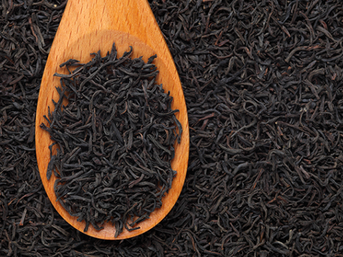

Що таке чорний чай?
Чорний чай — це один із найпоширеніших видів чаю, який проходить повну ферментацію, завдяки чому набуває темного кольору та насиченого смаку.
Виробництво чорного чаю
Процес виготовлення чорного чаю включає такі етапи:
- Збір: Вибираються зрілі листки.
- Зав’ялення: Листя висушується, щоб знизити вологість.
- Скручування: Листя скручують для вивільнення соку.
- Ферментація: Відбувається окислення, що надає чорному чаю характерний аромат.
- Сушіння: Листя висушується при високій температурі.
Як заварювати чорний чай?
- Температура води: 90-95°C
- Час заварювання: 3-5 хв.
- Кількість чаю: 1 ч.л. на 200 мл води.
- Чорний чай можна пити з лимоном, медом або молоком.